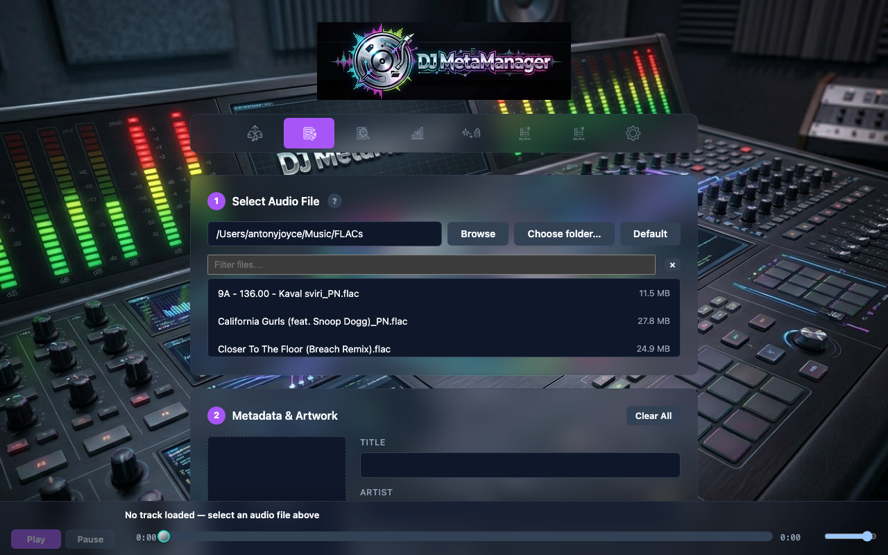
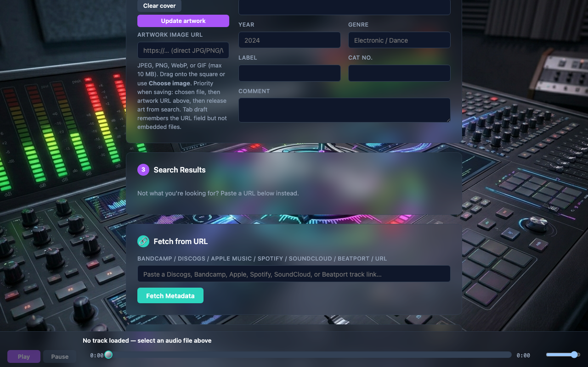
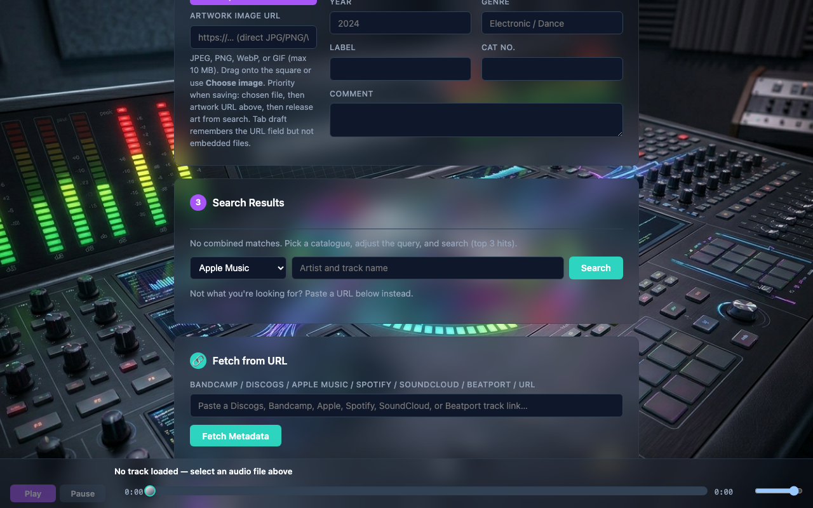
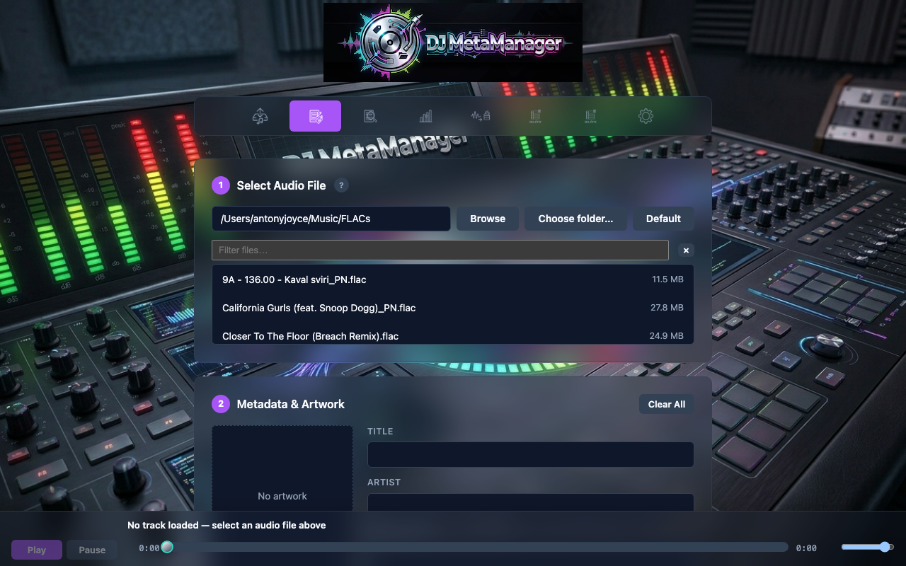
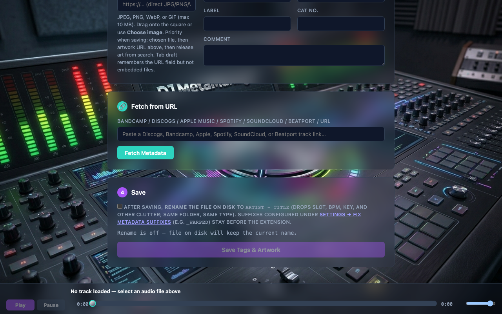
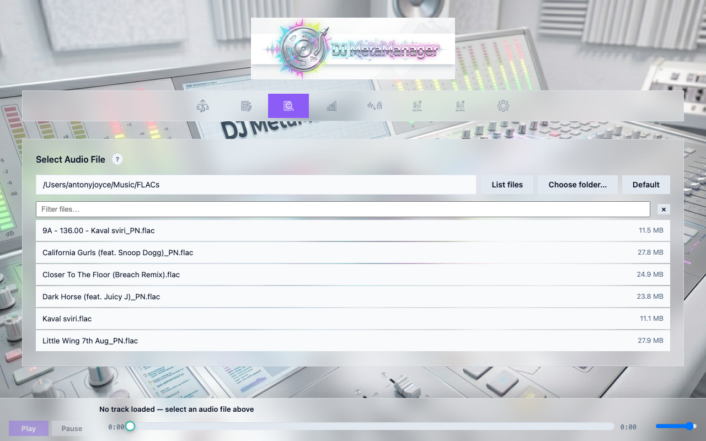
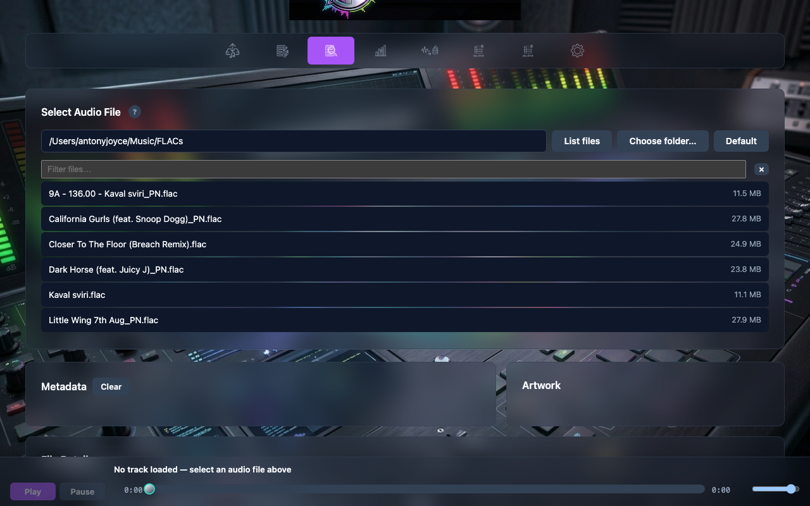

Fix Metadata & Inspect
Fix Metadata is the per-file editor: browse audio on the server, search online catalogues, paste URLs, edit fields, embed artwork, and save—optionally renaming the file to Artist - Title. Inspect is read-focused: a full tag table, artwork preview, Rekordbox-friendly FLAC artwork sizing, and deep links by folder.
Fix Metadata — selecting a file
Enter a folder path or use Browse, Choose folder… (server-side navigator), or Default (Settings destination). The app lists supported audio files. Selecting a file loads current tags into the editor and triggers an automatic combined search when it can derive a query from tags or filename.
Deep links: /fix?file=/absolute/path/to/track.flac with optional &q=search+terms to override the search query.

06-fix-step1-folder-files.png).Step 2 — Search results
The server queries Apple Music (iTunes Search API), Discogs, and Bandcamp (public search page), then merges results. Click a row to fetch full metadata for that URL. If the release has multiple tracks, a tracklist appears so you can pick the correct cut.
When combined search returns no hits, the UI shows a fallback panel: choose Apple Music (default), Discogs, or Bandcamp, refine the query, and click Search. The app shows up to three results from that catalogue only; pick one to fetch metadata.

07-fix-step2-combined-results.png).
08-fix-step2-manual-site-search.png).Fetch from URL
You can always paste a Bandcamp, Discogs, Apple Music, or Spotify link (or other supported URLs) and click Fetch Metadata without using search.
Step 3 — Edit and artwork
Adjust title, artist, album, year, genre, label, catalogue number, and comment. Artwork preview loads via the app’s artwork proxy when a remote URL is present.

09-fix-step3-metadata-artwork.png).Step 4 — Save and optional rename
Save Tags & Artwork writes embedded tags and art. Optional: rename on disk to Artist - Title in the same folder, stripping DJ-style filename clutter. The metadata source URL is stored in the file (Vorbis comment / ID3 TXXX per format) and may appear on Inspect.

10-fix-step4-save-rename.png).Inspect
Inspect is for verification: list files, select one, and read every tag the app exposes, plus embedded artwork. Fix artwork dimensions (FLAC only) can rewrite cover art to dimensions friendly for Rekordbox. Saved metadata URL displays when the file records which page was used for tagging.
Deep link: /inspect?dir=/path/to/folder. The last browsed folder is shared with Fix Metadata in the browser for convenience.

11-inspect-folder-list.png).
12-inspect-tag-table-artwork.png).UI state in the browser
Fix and Inspect remember drafts in localStorage (djmm.pageState) so returning to the tab restores folders and fields where possible. This is not cookie-based and does not sync across browsers. See Reference.